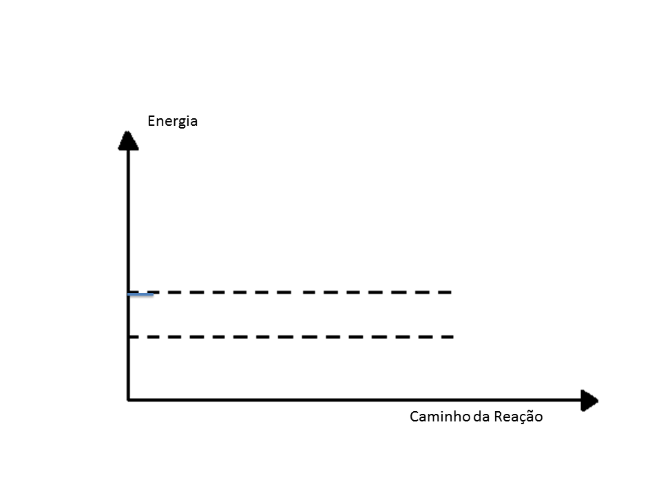

CINÉTICA
CINÉTICA
QUÍMICA
Reação com Catalizador

O catalisador é uma substância que acelera a velocidade de uma reação e diminui a energia de ativação sem ser consumido no decorrer da reação. Ele age apenas como um facilitador do processo de quebra das ligações químicas dos reagentes.